### Flood Status Overview - Across Likouala, Cuvette, & Plateaux **3,694 km<sup>2</sup>** remains flooded. <br><br><br><br><br><br><br> > Source: Sentinel-1 > GRD, Sentinel-2 > MSS, Landsat 8 OLI
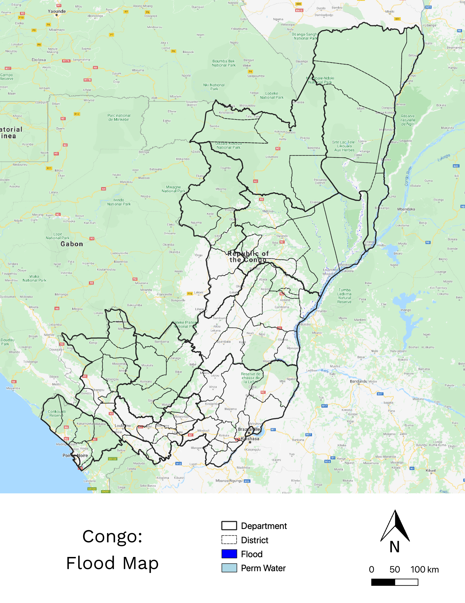
### Flood Area Overview - **Loukolela (1,305), Mossaka (549)**, and **Makotimpoko (510)** remain the most flood affected districts in terms of total flooded area (km<sup>2</sup>) <br><br><br> > Source: Sentinel-1 > GRD, Sentinel-2 > MSS, Landsat 8 OLI
### Flooded Cropland Area Overview - Affected Cropland (km<sup>2</sup>) by District in Likouala (0.48), Cuvette (0.83), and Plateaux (0.32)
### Department: Likouala - Flooded area: **992 km<sup>2</sup>** - People potentially impacted: **66,757** - Cropland area potentially impacted : **1.23 km<sup>2</sup>** - Meters of roads potentially impacted: **24,580 m** - Villages potentially affected: **130** > Source: Sentinel-1 > GRD, Sentinel-2 > MSS, Landsat 8 OLI
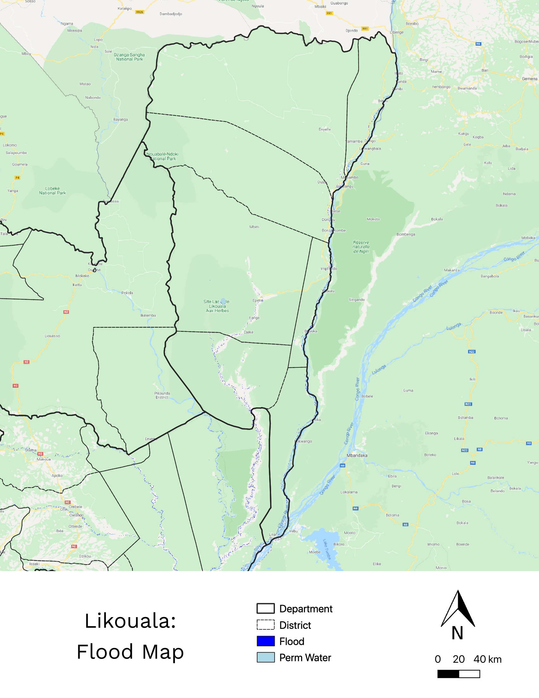
### District: Betou - Flooded area: **110 km<sup>2</sup>** - People potentially impacted: **26,382** - Cropland area potentially impacted : **0.69 km<sup>2</sup>** - Meters of roads potentially impacted: **7,510 m** > Source: Sentinel-1 > GRD, Sentinel-2 > MSS, Landsat 8 OLI
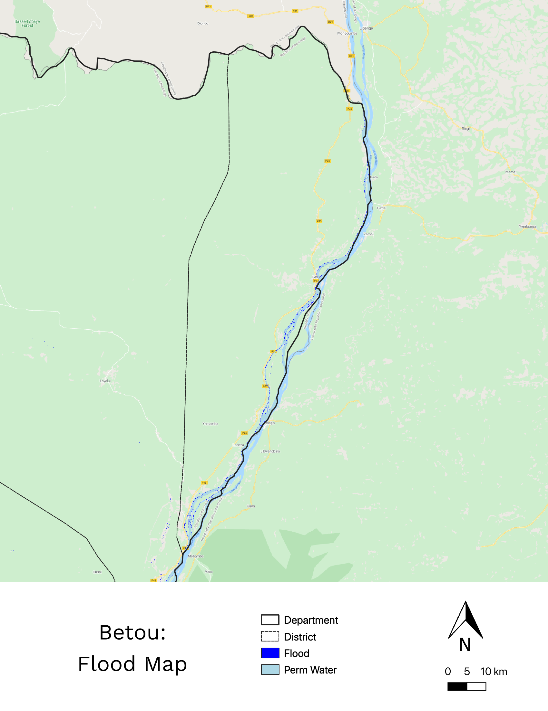
### District: Impofondo - Flooded area: **120** km<sup>2</sup> - People potentially impacted: **11,709** - Cropland area potentially impacted : **0.02 km<sup>2</sup>** - Meters of roads potentially impacted: **5,270 m** > Source: Sentinel-1 > GRD, Sentinel-2 > MSS, Landsat 8 OLI
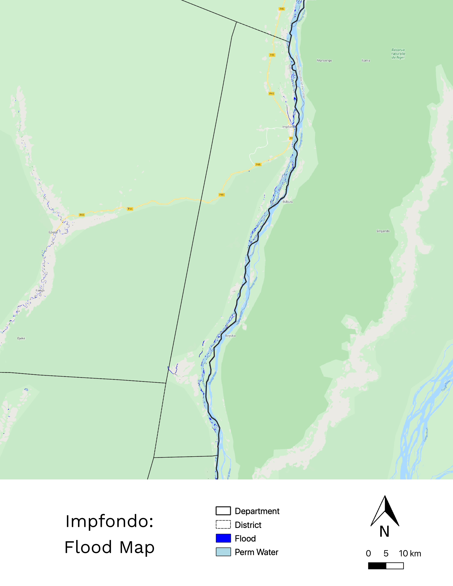
### District: Liranga - Flooded area: **292** km<sup>2</sup> - People potentially impacted: **15,652** - Cropland area potentially impacted : **0.15 km<sup>2</sup>** - Meters of roads potentially impacted: **190 m** > Source: Sentinel-1 > GRD, Sentinel-2 > MSS, Landsat 8 OLI
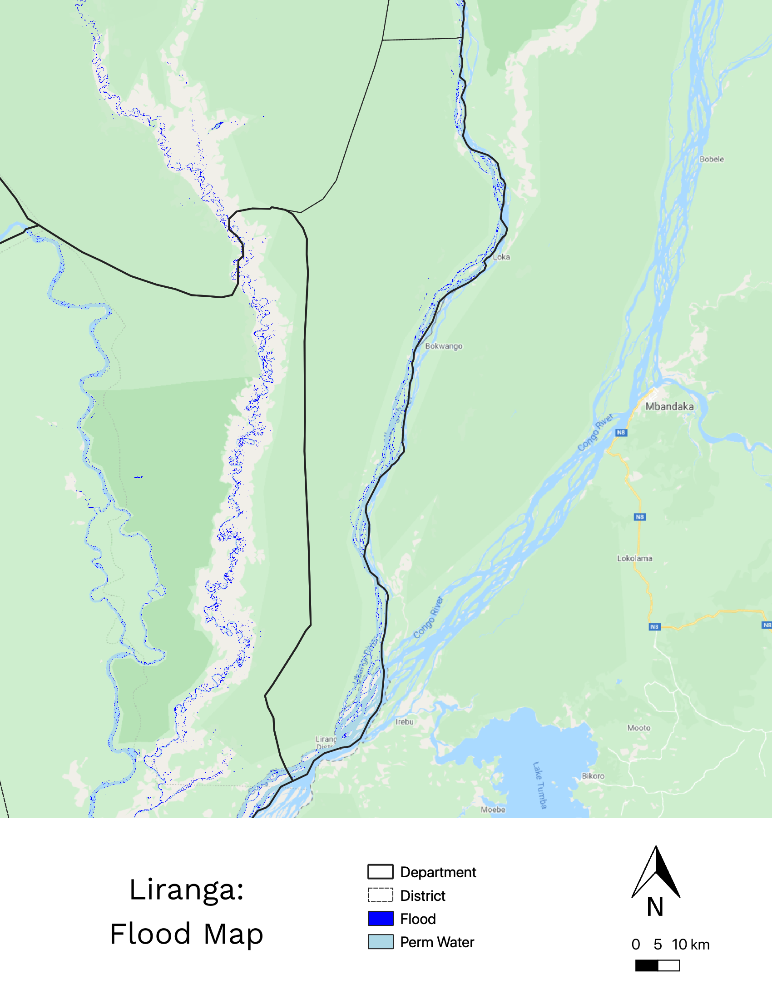
### Department: Cuvette - Flooded area from December 15 - January 31: **1,681** km<sup>2</sup> - People potentially impacted: **10,276** - Cropland area potentially impacted : **0.73 km<sup>2</sup>** - Meters of roads potentially impacted: **13,290** - Villages potentially affected: **133** > Source: Sentinel-1 > GRD, Sentinel-2 > MSS, Landsat 8 OLI
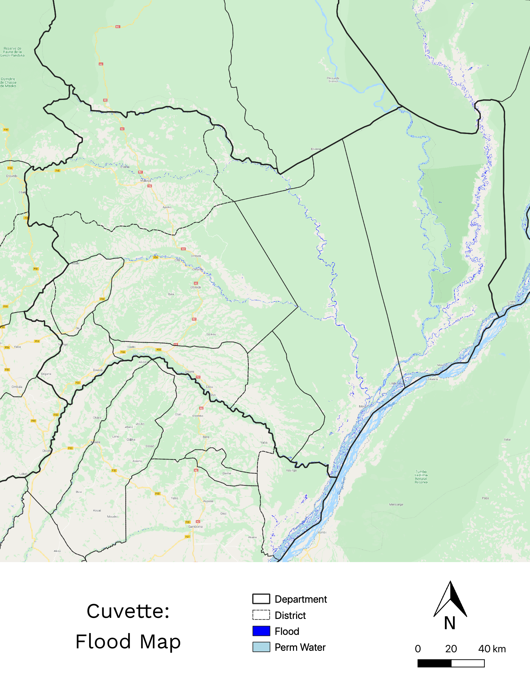
### Department: Loukolela - Flooded area: **1,035** km<sup>2</sup> - People potentially impacted: **5,102** - Cropland area potentially impacted : **0.51 km<sup>2</sup>** - Meters of roads potentially impacted: **2,300** > Source: Sentinel-1 > GRD, Sentinel-2 > MSS, Landsat 8 OLI
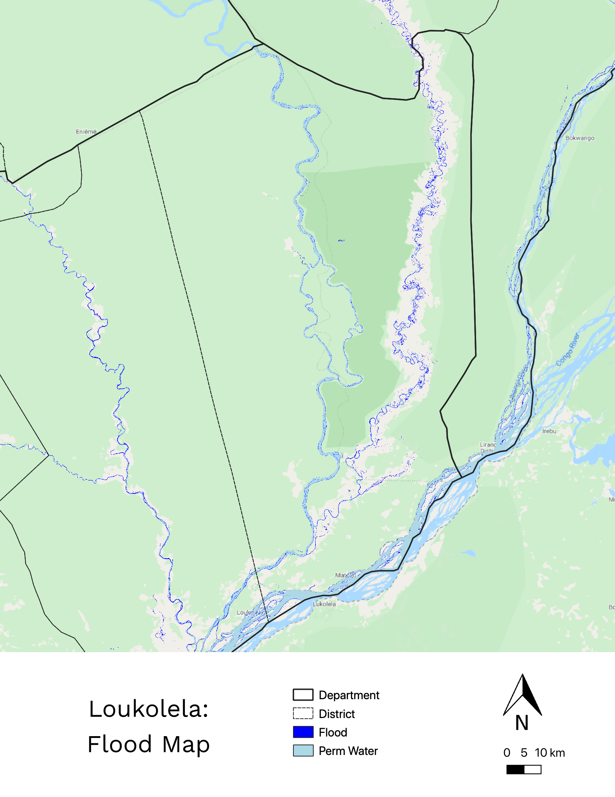
### Department: Mossaka - Flooded area: **549** km<sup>2</sup> - People potentially impacted: **4,097** - Cropland area potentially impacted : **0.14 km<sup>2</sup>** - Meters of roads potentially impacted: **1,720** > Source: Sentinel-1 > GRD, Sentinel-2 > MSS, Landsat 8 OLI
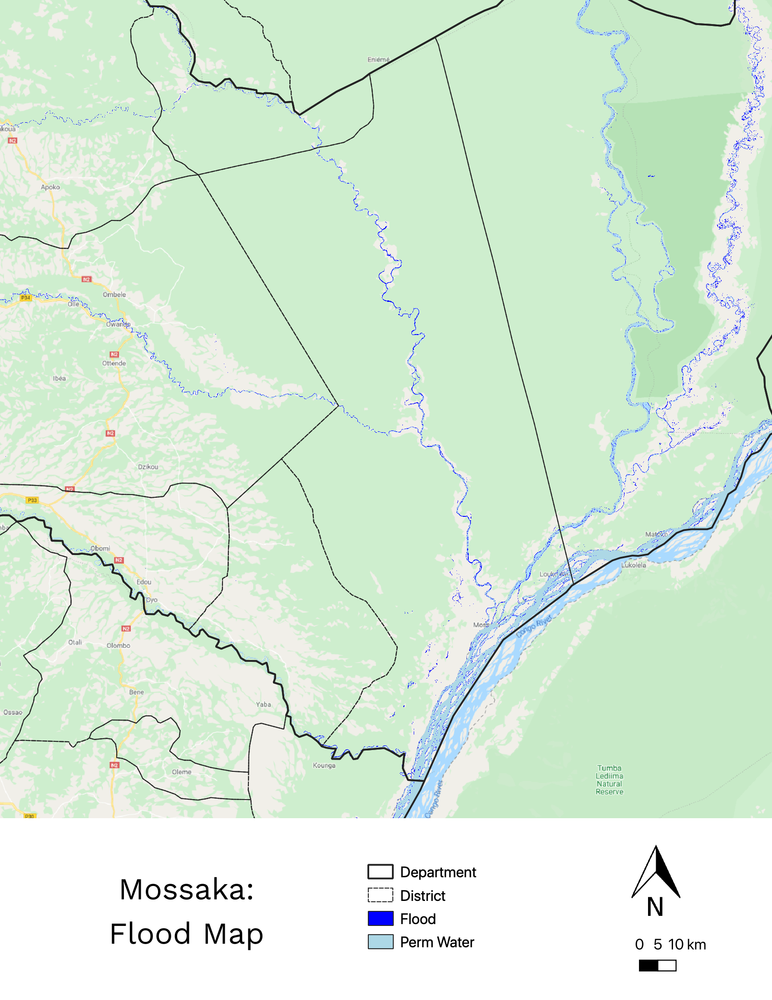
### Department: Plateaux - Flooded area: **1,020** km<sup>2</sup> - People potentially impacted: **7,008** - Cropland area potentially impacted : **0.26 km<sup>2</sup>** - Meters of roads potentially impacted: **3,670** - Villages potentially affected: **77** > Source: Sentinel-1 > GRD, Sentinel-2 > MSS, Landsat 8 OLI
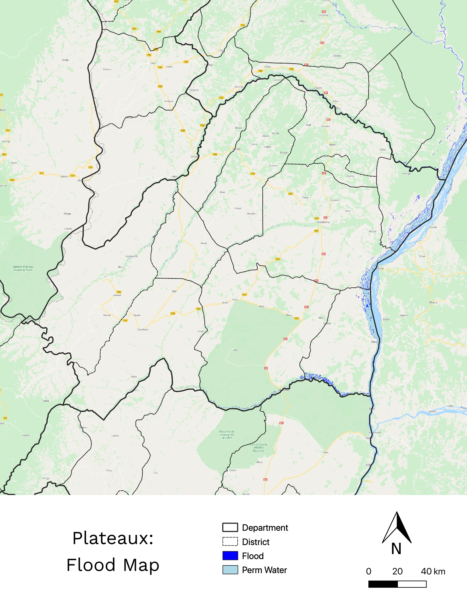
### Department: Makotimpoko - Flooded area: **510** km<sup>2</sup> - People potentially impacted: **6,442** - Cropland area potentially impacted : **0.10 km<sup>2</sup>** - Meters of roads potentially impacted: **1,940** > Source: Sentinel-1 > GRD, Sentinel-2 > MSS, Landsat 8 OLI
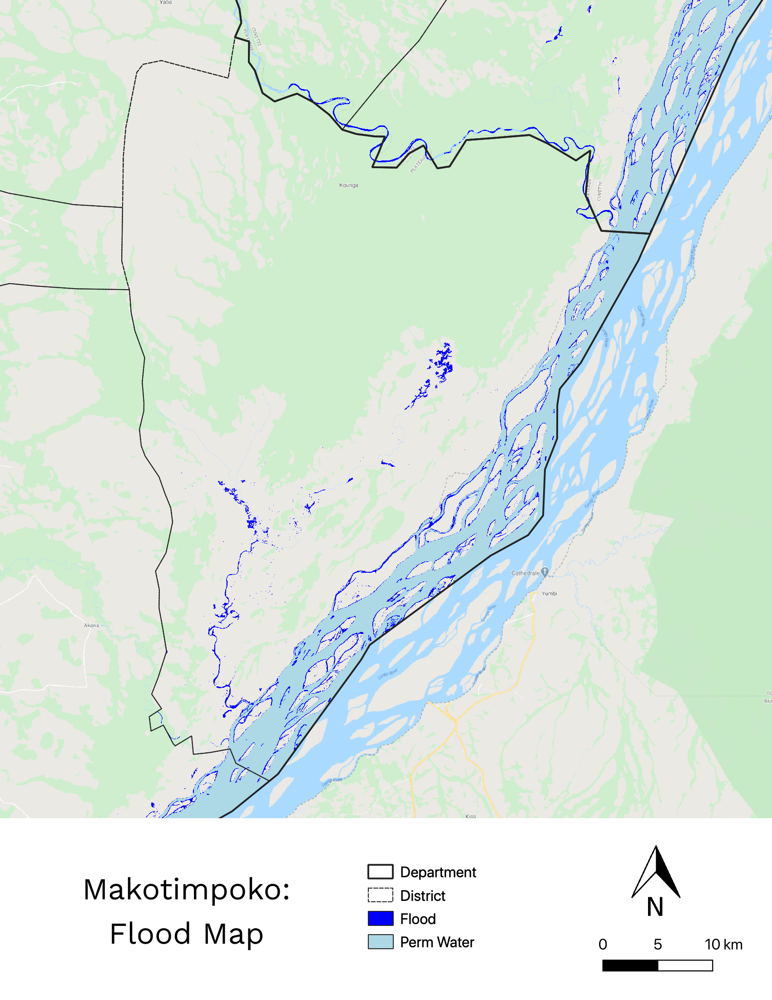
### Rainfall Summary this month
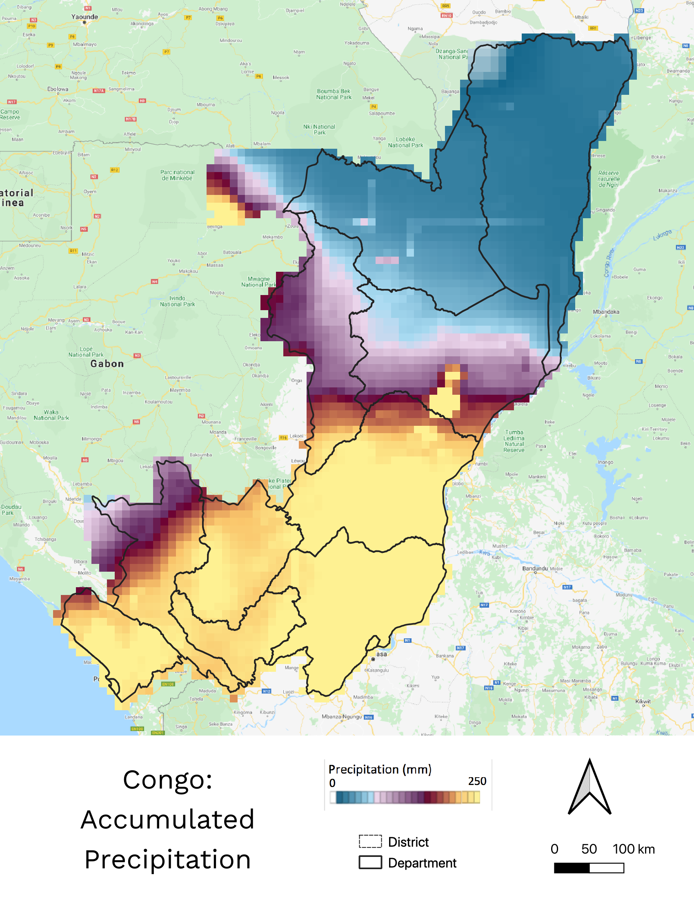
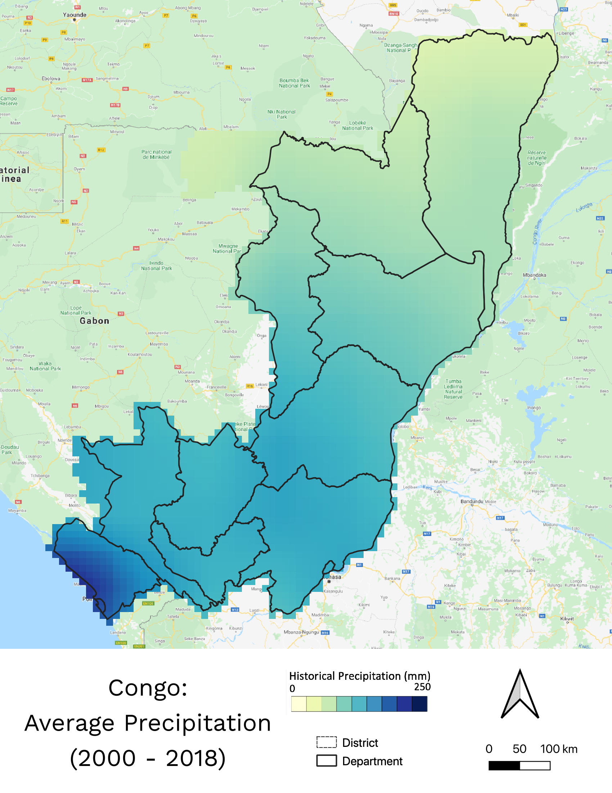
Areas most likely affected by rainfall last month (left) versus the climatological average for January (month). Pool Department had the highest accumulated rainfall (>200 mm).